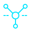
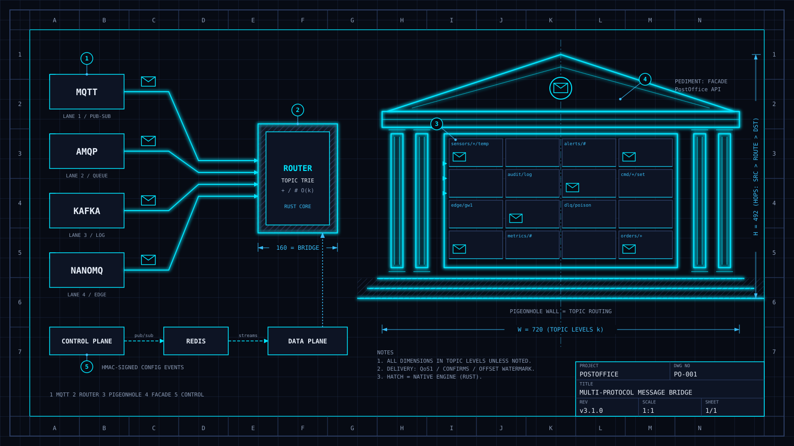
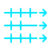
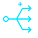
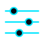
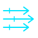

MQTT / NanoMQ edge
Pub/sub and edge brokers with QoS 1 PUBACK tracking.
DWG PO-001 / REV v3.1.0
A hybrid Rust/Python bridge routing MQTT, AMQP (RabbitMQ), Apache Kafka and NanoMQ with verified delivery guarantees, a Redis control plane and horizontally scaled data plane workers.

One facade, every protocol.

Pub/sub and edge brokers with QoS 1 PUBACK tracking.
Queues with publisher confirms and semantic translation.

Partitioned logs with contiguous offset watermarks.
Lightweight edge broker with store-and-forward.

O(k) wildcard matching, + and #, $-prefix isolation.

Redis-backed admin with HMAC-signed config events.

Rust core, horizontally scaled workers, canary rollout.
Prometheus /metrics, health probes, budgeted DLQ.
Control plane writes to Redis; data plane workers route traffic without restarts.
Bridge MQTT sensors into Kafka with JSON to Avro conversion.
from postoffice.app import PostOffice
# Initialize PostOffice (enable Native Rust Engine with use_native_engine=True)
po = PostOffice(
metrics_port=9100,
dlq_broker="kafka_bus",
dlq_topic="deadletter.events",
use_native_engine=True,
)
# Register broker connections
po.add_broker("mqtt_edge", "mqtt", host="localhost", port=1883)
po.add_broker("kafka_bus", "kafka", bootstrap_servers="localhost:9092")
# Add a wildcard route with dynamic schema conversion
po.add_route(
source_broker="mqtt_edge",
source_topic="sensors/+/telemetry",
target_broker="kafka_bus",
target_topic="analytics.readings",
input_format="json",
output_format="avro",
output_schema="SensorReading",
wire_format=True,
)
# Start connections
po.start()